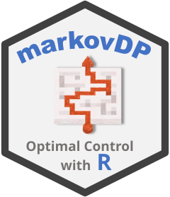

Solving Tic-Tac-Toe as an MDP
Michael Hahsler
Source:vignettes/TicTacToe.Rmd
TicTacToe.RmdIntroduction
In this vignette we show how the R package markovDP
(Hahsler
2024) can be used to define and solve the simple Tix-Tac-Toe
game. We define the game Tic-Tac-Toe from the perspective of player
x as a simple MDP, and then try to solve the problem using
different dynamic programming and reinforcement learning techniques.
Defining Tic-Tac-Toe as an MDP
We implement the game form the perspective of player x,
where the other player is part of the environment. We represent the
board as a 3-by-3 matrix.
Actions
The board consists of nine positions. The player x can
mark any of the nine positions with an x as long as they
are empty. We will number the actions from 1 through 9 using the index
in the matrix (note that R indexed by column). We get the following
layout for actions.
matrix(1:9, ncol = 3, nrow = 3)
#> [,1] [,2] [,3]
#> [1,] 1 4 7
#> [2,] 2 5 8
#> [3,] 3 6 9The set of actions of the MDP is therefore:
A <- as.character(1:9)
A
#> [1] "1" "2" "3" "4" "5" "6" "7" "8" "9"State Space
We use a characters in the board matrix to represent the players
(x and o). For an empty place we use the
underscore symbol _. As the label for a state, we use a
string of all the places of the board in index order. We implement
several helper functions.
ttt_empty_board <- function() matrix('_', ncol = 3, nrow = 3)
ttt_state2label <- function(state) paste(state, collapse = '')
ttt_label2state <- function(label) matrix(strsplit(label, "")[[1]], nrow = 3, ncol = 3)
ttt_available_actions <- function(state) {
if (length(state) == 1L) state <- ttt_label2state(state)
which(state == "_")
}
ttt_result <- function(state, player, action) {
if (length(state) == 1L) state <- ttt_label2state(state)
if (state[action] != "_")
stop("Illegal action.")
state[action] <- player
state
}Next, we perform a sequence of actions to see how a game would progress using the result function.
b <- ttt_empty_board()
b <- ttt_result(b, 'x', 1)
b <- ttt_result(b, 'o', 4)
b <- ttt_result(b, 'x', 2)
b <- ttt_result(b, 'o', 5)
b <- ttt_result(b, 'x', 3)
b
#> [,1] [,2] [,3]
#> [1,] "x" "o" "_"
#> [2,] "x" "o" "_"
#> [3,] "x" "_" "_"
ttt_state2label(b)
#> [1] "xxxoo____"
ttt_available_actions(b)
#> [1] 6 7 8 9We need to determine terminal states by checking if the game is over.
ttt_terminal <- function(state) {
if (length(state) == 1L) state <- ttt_label2state(state)
# Check the board for a win and return one of
# 'x', 'o', 'd' (draw), or 'n' (for next move)
win_possibilities <- rbind(state, t(state), diag(state), diag(t(state)))
wins <- apply(win_possibilities, MARGIN = 1, FUN = function(x) {
if (x[1] != '_' && length(unique(x)) == 1) x[1]
else '_'
})
if (any(wins == 'x'))
return('x')
if (any(wins == 'o'))
return('o')
# Check for draw
if (sum(state == '_') < 1) {
return('d')
}
return('n')
}
b
#> [,1] [,2] [,3]
#> [1,] "x" "o" "_"
#> [2,] "x" "o" "_"
#> [3,] "x" "_" "_"
ttt_terminal(b)
#> [1] "x"Transition Model
To enumerate the complete reachable state space to define the MDP, we
need to know the start state (an empty board) and define the transition
model. The model is a function that, given an action and a start state,
returns a named vector with all end states that have a non-zero
probability. This is convenient, since we do not know the complete and
potentially large state space at this point. We also add the three
special states of 'win', 'loss', and
'draw'.
During one interaction with the environment, player x
performs an actions following the learned policy. We implement
o as part of the stochastic transition model of the
environment. We return a uniform probability distribution over all
actions that o has available.
start <- ttt_state2label(ttt_empty_board())
start
#> [1] "_________"
P <- function(model, action, start.state) {
action <- as.integer(action)
# absorbing states
if (start.state %in% c('win', 'loss', 'draw', 'illegal')) {
return(structure(1, names = start.state))
}
# avoid illegal action by going to the very expensive illegal state
if (!(action %in% ttt_available_actions(start.state))) {
return(structure(1, names = "illegal"))
}
# make x's move
next_state <- ttt_result(start.state, 'x', action)
# terminal?
term <- ttt_terminal(next_state)
if (term == 'x') {
return(structure(1, names = "win"))
} else if (term == 'o') {
return(structure(1, names = "loss"))
} else if (term == 'd') {
return(structure(1, names = "draw"))
}
# it is o's turn, try all available actions
actions_of_o <- ttt_available_actions(next_state)
possible_end_states <- lapply(
actions_of_o,
FUN = function(a)
ttt_result(next_state, 'o', a)
)
# fix terminal states
term <- sapply(possible_end_states, ttt_terminal)
possible_end_states <- sapply(possible_end_states, ttt_state2label)
possible_end_states[term == 'x'] <- 'win'
possible_end_states[term == 'o'] <- 'loss'
possible_end_states[term == 'd'] <- 'draw'
possible_end_states <- unique(possible_end_states)
return(structure(rep(1 / length(possible_end_states),
length(possible_end_states)),
names = possible_end_states))
}We use find_reachable_states() to find all reachable
states using depth-first search. We also add the special state
"NA" which is only reachable if we use an unavailable
action.
S <- union(c('win', 'loss', 'draw', 'illegal'),
reachable_states(P, start_state = start, actions = A))
head(S)
#> [1] "win" "loss" "draw" "illegal" "xoxo_ox__" "xoxoo_xxo"The total number of reachable states is:
length(S)
#> [1] 2527Reward Function
The player only receives a reward at the end of the game. The default
reward for states is 0 and the reward for ending up in the states
win, loss, and draw.
R <- rbind(
R_( value = 0),
R_(end.state = 'win', value = +1),
R_(end.state = 'loss', value = -1),
R_(end.state = 'draw', value = 0),
R_(end.state = 'illegal', value = -Inf),
# Note: there is no more reward once the agent is in a terminal state
R_(start.state = 'win', value = 0),
R_(start.state = 'loss', value = 0),
R_(start.state = 'draw', value = 0),
R_(start.state = 'illegal', value = 0)
)Constructing the MDP
tictactoe <- MDP(
S,
A,
P,
R,
discount = 1,
start = start,
name = "TicTacToe"
)
tictactoe
#> MDPModel, MDP - TicTacToe
#> Discount factor: 1
#> Horizon: Inf epochs
#> Size: 9 actions / 2527 states
#> Storage: transition prob as function / reward as data.frame. Total size: 274.6 Kb
#> Start: _________
#> Model list components: 'name', 'discount', 'horizon', 'states',
#> 'actions', 'start', 'transition_model', 'reward', 'info'We normalize the MDP for quicker access.
tictactoe$absorbing_states <- c("draw", "loss", "win", "illegal")
n <- normalize_MDP(tictactoe, sparse = TRUE)Define Test Boards
We define a few boards to compare how different policies decide.
test_policy <- function(sol) {
boards <- list(empty = rbind(c("_","_","_"),
c("_","_","_"),
c("_","_","_")),
win_4_or_5 = rbind(c("x","_","x"),
c("o","_","o"),
c("_","_","_")),
win_1 = rbind(c("_","x","x"),
c("_","_","o"),
c("o","o","x")),
draw_6 = rbind(c("_","o","_"),
c("x","o","x"),
c("_","_","_")),
loss = rbind(c("o","o","_"),
c("x","o","x"),
c("x","_","_"))
)
pol <- policy(sol)
res <- do.call(rbind, lapply(boards, FUN = function(b) pol[pol$state == ttt_state2label(b), ]))
res
}Solve
LP
We can find the optimal policy using linear programming.
sol_lp <- solve_MDP(n, method = "LP:LP")
#> Warning in func(model, method, horizon, discount, ..., continue = continue, :
#> discount factor needs to be <1 for the used LP formulation. Using 0.999 instead
#> of 1.
test_policy(sol_lp)
#> state V action
#> empty _________ 0.9832345 9
#> win_4_or_5 xo____xo_ 1.0000000 4
#> win_1 __ox_oxox 1.0000000 1
#> draw_6 _x_oo__x_ 0.3745000 6
#> loss oxxoo__x_ -1.0000000 9Value Iteration
sol_vi <- solve_MDP(n, method = "DP:VI")
test_policy(sol_vi)
#> state V action
#> empty _________ 0.984375 1
#> win_4_or_5 xo____xo_ 1.000000 5
#> win_1 __ox_oxox 1.000000 1
#> draw_6 _x_oo__x_ 0.375000 6
#> loss oxxoo__x_ -1.000000 7Value iteration converges to the optimal policy.
action_discrepancy(sol_vi, sol_lp)
#> [1] 0The expected state value is for the optimal policy playing against a random player.
Policy Iteration
sol_pi <- solve_MDP(n, method = "DP:PI")
test_policy(sol_pi)
#> state V action
#> empty _________ 0.984375 9
#> win_4_or_5 xo____xo_ 1.000000 5
#> win_1 __ox_oxox 1.000000 1
#> draw_6 _x_oo__x_ 0.375000 6
#> loss oxxoo__x_ -1.000000 6Policy iteration also converges to the optimal policy.
action_discrepancy(sol_pi, sol_lp)
#> [1] 0Q-Learning
sol_q_learning <- solve_MDP(n, method = "TD:q_learning", n = 10000, horizon = 9, Q = 1)
test_policy(sol_q_learning)
#> state V action
#> empty _________ 1.068516 7
#> win_4_or_5 xo____xo_ 1.000000 8
#> win_1 __ox_oxox 1.000000 9
#> draw_6 _x_oo__x_ 1.000000 4
#> loss oxxoo__x_ 1.000000 2
action_discrepancy(sol_q_learning, sol_lp, proportion = TRUE)
#> [1] 0.7597942Q learning would need more playoouts and does not learn the optimal policy for all states.